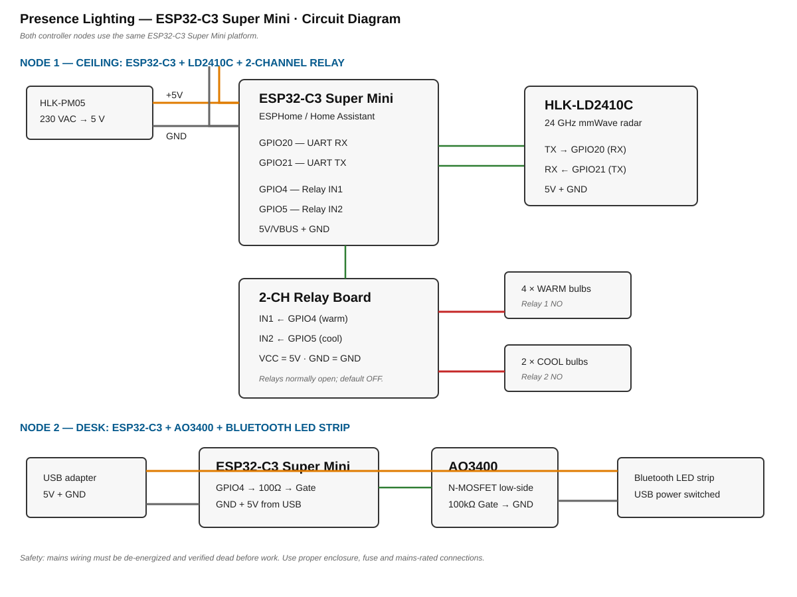

Presence Lighting — Bedroom
MediumBedroomHome Assistant~₹900–1,300
mmWave presence + time-of-day lighting. A ceiling node (ESP32 + LD2410C radar + 2-channel relay) drives the 6 concealed AC bulbs; a desk node (ESP32-C3 + MOSFET) power-cycles the Bluetooth LED strip. No new wall wiring — the relays sit in series after the existing switches, which are parked permanently ON as master cut-offs.
How it works
- LD2410C (24 GHz radar, ceiling-mounted facing down) continuously reports moving target / still target / nobody + distance over UART. Unlike a PIR it sees a still person (breathing counts), so lights never time out while you read or sleep — which is why Sleep mode exists below.
- ESP32 (Node 1) runs ESPHome, talks locally to Home Assistant, and drives two relays wired in series after your wall switches.
- Wall switches stay parked ON. Flip one OFF and that circuit (and the module) is physically dead — your maintenance cut-off. Day to day, the relays do all switching.
- Node 2 is a pass-through in the strip's USB cable. 5 V flows straight through; the ground return goes through a MOSFET the ESP32-C3 controls. The strip auto-resumes on power, so cutting/restoring power = off/on. The BT remote still works for colours whenever the strip is powered.
Modes (Home Assistant, synced to iPhone Sleep Focus)
- Day (sunrise→sunset): presence → cool group ON, strip OFF. Empty 3–5 min → all off.
- Evening (sunset→Sleep Focus): presence → warm group (4 corner bulbs) ON, strip OFF. Empty 3–5 min → warm OFF, strip ON. Cool group manual-only.
- Sleep (Sleep Focus ON): one-shot all-bulbs-OFF + strip ON, then presence automations DISABLED — walking in/out changes nothing. HA app + wall switches stay live for manual light.
- Morning (Sleep Focus OFF): back to Day/Evening. Fallback if phone unavailable: HA schedule helper at usual bedtime.
Circuit diagram

Node 1 — Ceiling connections
Power tap (at the Group-1 light point)
| From | To | Wire |
|---|
| Switched-live (switch 1) | 1A fuse → HLK-PM05 "L" | 230 V Live |
| Neutral at light point | HLK-PM05 "N" | 230 V Neutral |
| HLK-PM05 +5V | ESP32 VIN, LD2410 VCC, Relay VCC | 5 V |
| HLK-PM05 GND | ESP32 GND, LD2410 GND, Relay GND | GND |
Signals
| ESP32 pin | Goes to | Note |
|---|
| GPIO16 (RX2) | LD2410 TX | crossed |
| GPIO17 (TX2) | LD2410 RX | crossed, 256000 baud |
| GPIO26 | Relay IN1 (4-bulb warm group) | active-low on most boards |
| GPIO27 | Relay IN2 (2-bulb cool group) | active-low |
Mains switching
| From | To |
|---|
| Switched-live (switch 1) | RLY1 COM |
| RLY1 NO | Live onward to the 4 warm bulbs |
| Switched-live (switch 2) | RLY2 COM |
| RLY2 NO | Live onward to the 2 cool bulbs |
| Bulb neutrals | untouched |
Relays use NO (normally-open): if the ESP32 dies or loses power the relays open → lights behave as "off", and the wall-switch flip still gives manual light. Nothing fails dangerous.
Node 2 — Desk connections
| From | To |
|---|
| USB adapter 5V | ESP32-C3 5V pin AND strip 5V (straight through) |
| USB adapter GND | ESP32-C3 GND AND MOSFET Source |
| Strip GND | MOSFET Drain |
| ESP32-C3 GPIO4 | 100 Ω → MOSFET Gate; 100 kΩ Gate→GND |
Gate high = strip powered. GPIO4 boots low → strip off at power-up until HA says otherwise (fine for a night light).
Install & safety
Safety ritual: both wall switches OFF + main MCB OFF before any ceiling wiring. Verify dead with a tester. Bench-flash and bench-test Node 1 on a table with a USB cable before it ever touches mains.
- Node 1 (ESP32 + relays + PSU) goes in a plastic junction box above the false ceiling near the Group-1 light point.
- Sensor mount: top corner of the entrance wall above the gate, tilted ~30° down across the room. Its 4 wires (5V, GND, TX, RX) drop from the false ceiling to the junction box — keep the run ≤1.5 m, sensor ≥30 cm from the ESP32 antenna and out of the AC airflow. Fallback: ceiling, ~75 cm off the fan toward the desk wall, facing down.
- All mains joints: ferrules or proper twist + heat-shrink. No loose chocolate-block in air.
Tuning knobs in HA
- Per-distance-gate sensitivity (kill false triggers from curtains / AC airflow)
- Presence hold time (built into LD2410) + HA
for: timer
- Moving vs still target split (used by night mode)
Legend
L / Live (red): 230 VAC — lethal, MCB off only.
N / Neutral (blue): 230 VAC return.
+5V (orange) / GND (grey): low-voltage DC from HLK-PM05 — safe side.
Signal (green): 3.3 V logic (UART, relay control, MOSFET gate).
COM/NO: relay common / normally-open.
RX2/TX2: ESP32 hardware UART #2.